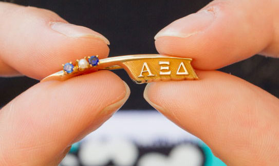

We are the Delta Lambda chapter of Alpha Xi Delta Fraternity here at RIT.
Nationally Alpha Xi Delta was founded in 1893 at Lombard College
in Galesburgs, Illinois by ten women. This was before the word
sorority had been created so Alpha Xi Delta was founded as a
fraternity of women.
Our local chapter was installed October 5, 1963. Before this our chapter was known as Phi Upsilon Phi which began in November 1919, then on February 24, 1963 Phi Upsilon Phi became a colony of Alpha Xi Delta.
Our local chapter was installed October 5, 1963. Before this our chapter was known as Phi Upsilon Phi which began in November 1919, then on February 24, 1963 Phi Upsilon Phi became a colony of Alpha Xi Delta.
Our Symbols
Badge:
"The Pen is Mightier Than the Sword."
"The Pen is Mightier Than the Sword."
Pink Rose
Alpha Xi Deltas wear this pin during their new member period.
Betxi Bear is Alpha Xi Delta mascot adopted in 1989.
Find Your Home!

Alpha Xi Delta Founders:
- Cora Bollinger Block
- Alice Bartlett Bruner
- Almira Lowry Cheney
- Frances Elisabeth Cheney
- Bertha Cook Evans
- Eliza Drake Curtis Everton
- Julia Maude Foster
- Lucy W. Gilmer
- Harriet Luella McCollum
- Lewie Strong Taylor